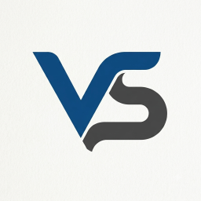
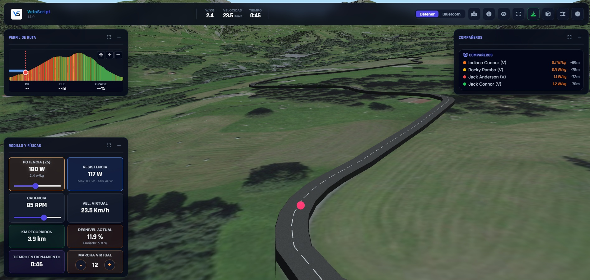
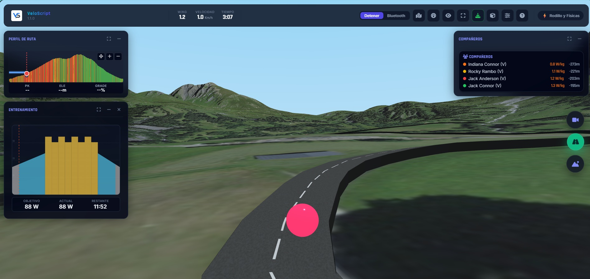
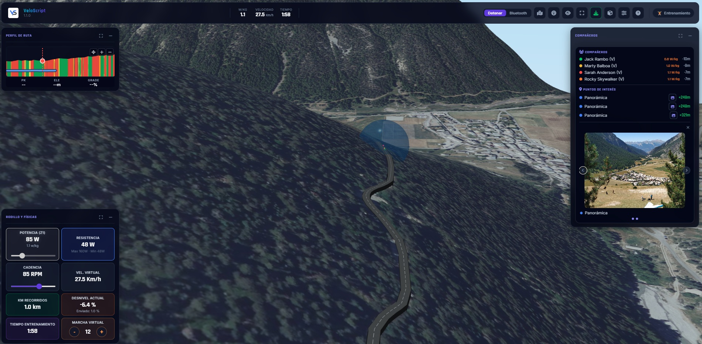
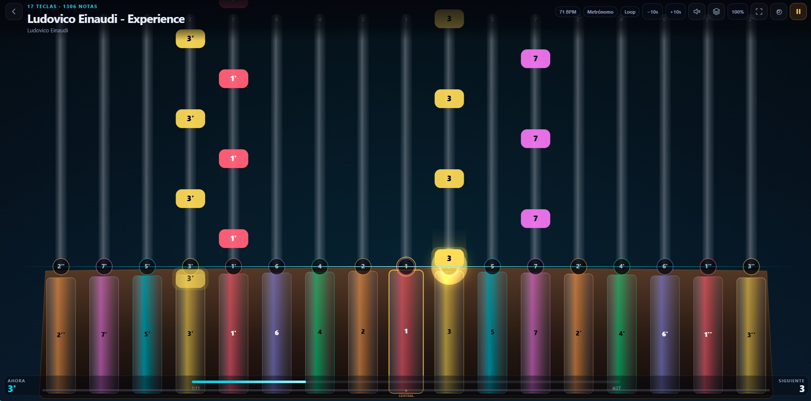
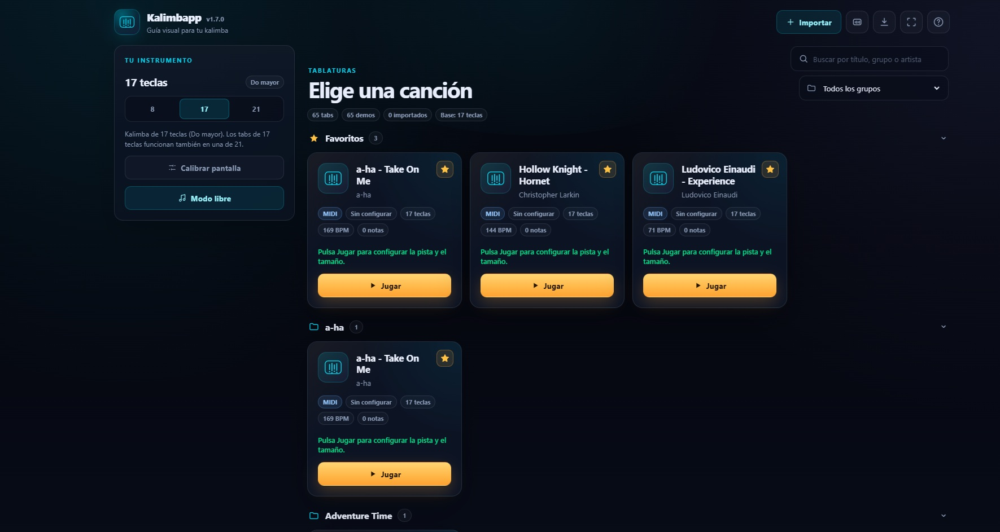
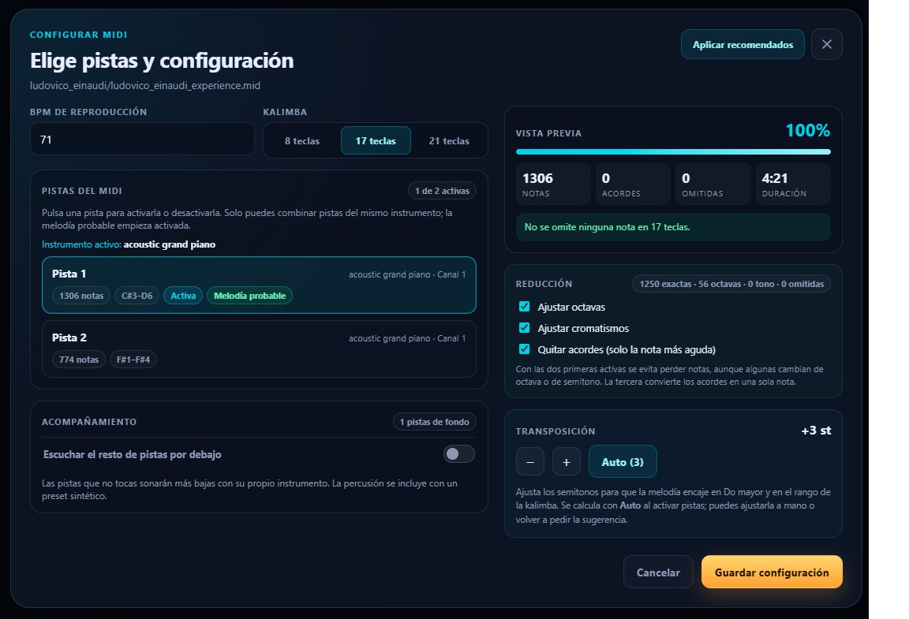

Potencia
248W
32,4km/h
92rpm
6,8%
Alpe d'Huez
8,1 km
7,9 %
Apps independientes · 100% gratis
Convierte tu rodillo en una ruta 3D o aprende kalimba con notas que caen como en un juego. Sin suscripciones, sin publicidad y sin crear una cuenta.
Por qué existen
VeloScript y Kalimbapp nacen de una idea sencilla: las herramientas para entrenar o aprender música no deberían interrumpirte con anuncios, suscripciones ni cuentas. Abres, usas, cierras. Tu progreso se queda en tu navegador.
No hay versión premium ni prueba de siete días. Todo lo que ves está disponible sin pagar.
Nada de banners, vídeos previos ni pausas forzadas. La interfaz es toda para lo que estás haciendo.
No necesitas registrarte. Rutas, ajustes y favoritos se guardan localmente en tu dispositivo.
Los proyectos
Una para cuando quieres sudar. Otra para cuando quieres tocar. Ambas funcionan directamente en el navegador y se pueden instalar como una app.
VeloScript es un entrenador de ciclismo virtual gratis para navegador. Kalimbapp es una app web gratis para aprender kalimba con notas tipo Guitar Hero. Ninguna tiene anuncios, suscripciones ni registro.

Tu rodillo. Tus rutas. Tu ritmo.
VeloScript es un entrenador de ciclismo virtual gratuito que funciona en el navegador. Convierte tus rutas GPX, KML o KMZ en recorridos 3D y sincroniza tu rodillo Bluetooth con la física de la ruta.



Capturas reales · clic para ampliar
Aprende kalimba como si fuera un juego.
Kalimbapp es una guía visual gratuita para tocar la kalimba. Las notas caen por el carril de cada tecla, como en un juego de ritmo, mientras la app sintetiza el sonido y te marca el tempo.



Capturas reales · clic para ampliar
Comparativa rápida
Dos apps distintas, las mismas reglas: precio cero, publicidad cero y sin pedirte una cuenta. Esta tabla resume lo esencial para elegir por dónde empezar.
| Aspecto | VeloScript | Kalimbapp |
|---|---|---|
| Para qué sirve | Ciclismo virtual con rodillo | Aprender y tocar kalimba |
| Plataforma | Navegador web y PWA | Navegador web y PWA |
| Precio | Gratis | Gratis |
| Anuncios | Ninguno | Ninguno |
| Registro | No | No |
| Instalable | Sí, como PWA | Sí, como PWA |
| Sin conexión | No; necesita mapas y rutas | Sí; app y demos cacheadas |
| Importa | GPX, KML y KMZ | TXT, MIDI y MusicXML |
| Bluetooth | Sí, rodillo y cadencia | No |
| Datos | En tu navegador | En tu navegador |
Sin fricción
¿Rodillo o kalimba? Empieza por la que te apetezca. No hay orden correcto.
No hace falta instalar nada. Si quieres acceso directo, añádela a tu pantalla de inicio.
Tus ajustes y tu progreso se quedan en tu dispositivo. Vuelve cuando quieras.
Las dos apps se pueden instalar desde el navegador. Kalimbapp además funciona sin conexión después de instalarse.
Dudas razonables
Lo que suele preguntar la gente antes de probar VeloScript o Kalimbapp. Si falta algo, la respuesta está a un clic dentro de cada app.
Actualizado:
Sí. Las dos aplicaciones se pueden usar completas sin pagar, sin suscripción y sin anuncios. No hay una versión premium oculta ni compras dentro de la app.
No. No hay registro ni inicio de sesión. La configuración, las rutas importadas y los favoritos se guardan en el almacenamiento local del navegador.
Sí. Ambas incluyen un manifest PWA y se pueden añadir a la pantalla de inicio desde un navegador compatible. En Android y escritorio aparece la opción de instalar; en iPhone o iPad se usa Compartir y Añadir a pantalla de inicio.
Kalimbapp funciona offline después de instalarse: su service worker cachea la aplicación y las canciones de demostración. VeloScript necesita conexión para cargar mapas, teselas y rutas, aunque se puede instalar como acceso directo.
VeloScript utiliza Web Bluetooth para conectar rodillos y sensores compatibles. También incluye un modo de simulación para probar la interfaz y la física sin dispositivo.
Kalimbapp está pensada para kalimbas diatónicas en Do mayor de 8, 17 y 21 teclas. Los tabs de 17 teclas también funcionan en una kalimba de 21.
Sí. VeloScript acepta archivos GPX, KML y KMZ. Kalimbapp acepta tabs de texto, archivos MIDI y partituras MusicXML, además de bibliotecas JSON.
En tu navegador. Ninguna de las dos aplicaciones necesita un backend para funcionar y no se crea una cuenta en la nube.
Tu siguiente sesión empieza aquí
Elige VeloScript o Kalimbapp. Ninguna te pedirá una cuenta, te enseñará un anuncio ni te cobrará por seguir practicando.